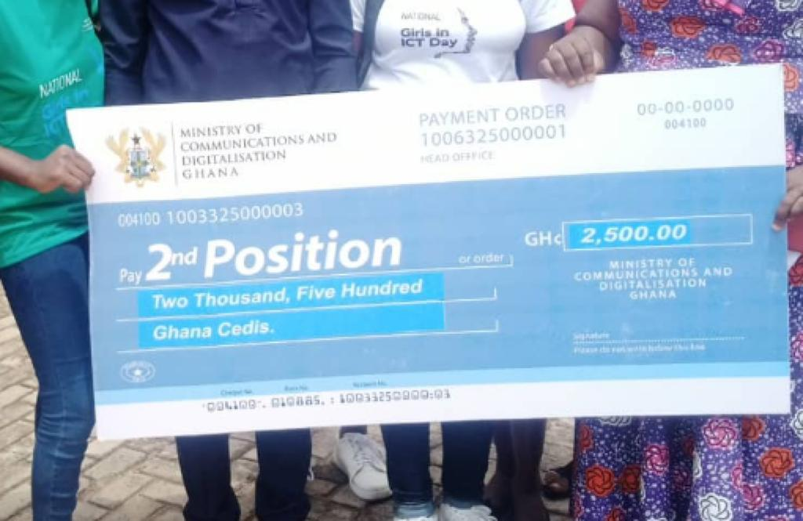

Girls in ICT in Jaman south led by the Abakomahenemaa of Drobo traditional area,Nana Akua Ferkaa and 8 selected ICT teachers from Jaman south won 2nd position and an amount of Gh2500 from the ministry of communication and digitalisation by accessing safely ICT. The program was meant to train young girls to access the ICT safely. 80 girls were selected to partake in the program from jaman the Jaman south municipality. In all the 12 districts of the Bono region, thousand girls were selected.They were trained for a week and 500 girls were selected in the first round of which they had 18 girls from Jaman south. They conducted another exam to select best 100 out of the 500 girls.Jaman south won 8 awards out of 30.And emerged second position as well. In an interview with Odi TV's Odiahinkan Asuo Tano,Nana Akua Ferkaa said they are going to have I.C.T labs in some selected schools in Jaman south.
 Jaman South girls in ICT won 2nd position and Gh2500!